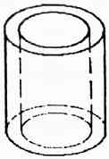
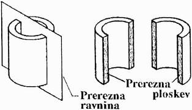
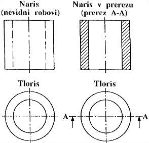

|
V prerezu rišemo votle predmete zato, da vidimo zgradbo njihove notranjosti. Pravila risanja v prerezu so predpisana s standardom SIST ISO 128.    Slika 1 Pravila risanja v prerezu: Potek prerezne ravnine oznaèimo s èrto H. Èrte, ki oznaèujejo potek prerezne ravnine, imenujemo slednice. Na koncu slednice narišemo pušèici, ki kažeta smer pogleda na prerezani del.
Prerezi v veè ravninah: Predmet lahko prerežemo tudi v veè razliènih ravninah. V prerezu oznaèimo veè ravnin tako, da prerezani ravni loèimo s srednjico. Šrafuri obeh sosednjih ravnin premaknemo med seboj za polovico razmika med šrafurnimi èrtami. Prerezi razliènih materialov: Prerezane stene moramo šrafirati. Za šrafiranje uporabljamo èrto B. Šrafurne èrte morajo biti narisane v enakomernih razdaljah pod kotom 45 stopinj glede na srednjico oziroma os telesa. Gostoto šrafure prilagodimo velikosti prerezane ploskve, vendar šrafura ne sme biti pregosta.
1. Vprašanja za usmerjanje pozornosti in usvajanje novih besed: 1. Kateri standard doloèa pravila risanja v prerezu? 2. Katera slika kaže nastanek prereza? 3. S katero vrsto èrte oznaèimo potek prerezne ravnine? 4. Kako imenujemo èrte, ki oznaèujejo potek prerezne ravnine? 5. S katero vrsto èrte rišemo šrafure? 6. Opiši vrsto èrte, s katero oznaèimo potek prerezne ravnine? 7. Opiši vrsto èrte, s katero rišemo šrafure? 8. Katera od slik 2 do 5 kaže pravokotno projekcijo prerezanega izdelka? 9. Katera od slik 2 do 5 kaže prerezani izdelek v perspektivi? 10. Katera od slik 2 do 5 kaže potek prerezne ravnine? 11. Katera od slik v tej uèni enoti kaže potek prerezov predmeta v veè ravninah? 12. Katera od slik v tej uèni enoti kaže naèin šrafiranja prerezanih površin? 2. Zapiši od ene do pet kljuènih besed, ki povzemajo vsebino te uène enote. 3. Vprašanja za razmislek, ponavljanje in povezovanje z lastno izkušnjo: 4. Domaèa naloga: V enem do petih stavkih zapiši, kaj ti je v tej uèni enoti najbolj ostalo v spominu. |